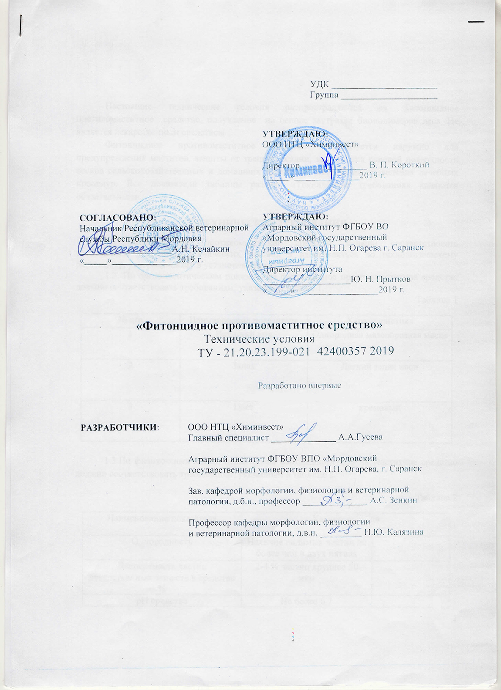
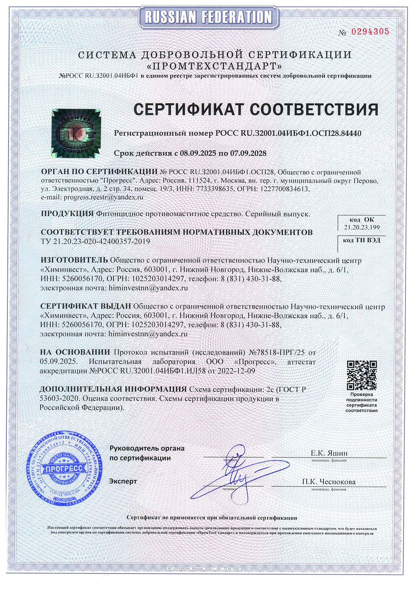

Фитонцидное противомаститное средство используется наружно для предупреждения маститов, защиты от трещин, ссадин, заживления раневой поверхности сосков сельскохозяйственных и домашних животных, облегчения проведения лечебных процедур.
содержит в составе фитонцидные экстракты хвойных деревьев, смягчающие вещества, абиетиновую кислоту. Не содержит антибиотиков.
Фитонцидное противомаститное средство содержит в составе фитонциды, которые негативно действуют на стрептококки, стафилококки и другие микорорганизмы, а также смоляные кислоты, способные прекращать рост бактерий дифтерии, сенной палочки и белого стафилококка. Смягчающие вещества активизируют обменные процессы в коже вымени, делают ее эластичной, способствуют заживлению микротравм и трещин. Абиетиновая кислота, которая входит в состав средства, – натуральный дезинфектант, эффективно нейтрализующий микроорганизмы – источники развития маститов.
применяется для косметического ухода за кожей животных, в том числе для ухода за проблемной кожей и для лечения сосков молочной железы. Предупреждает маститы, заживлянет раневую поверхность сосков молочной железы у сельскохозяйственных животных.
Обработку проводят 2 раза в сутки, нанося тонким слоем непосредственно на проблемный участок. При повторной обработке средством, ранее нанесенную мазь следует удалить с поверхности обрабатываемого участка стерильной марлей.
Фитонцидное профилактическое средство для предупреждения маститов выпускается в полимерной таре (по запросу потребителя). Способ хранения: в защищенном от света месте, при температуре не ниже +5°С. Срок годности - 18 месяцев. Изготовитель гарантирует соответствие фитонцидного противомаститного средства требованиям настоящего стандарта (ТУ – 21.20.23.199-021 42400357 2019) при соблюдении условий хранения и транспортирования продукта.
Пластиковая баночка, 400 г.
Доставка в течение 3-5 дней с полным комплектом сопроводительной документации(договор, счет, товарная накладная, наставление по применению, копия сертификата соответствия, паспорт на продукцию, рекламная информация).

Патент

Сертификат о соответствии